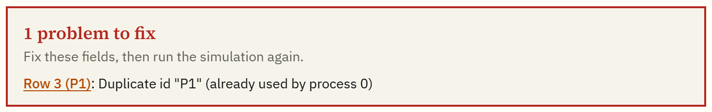
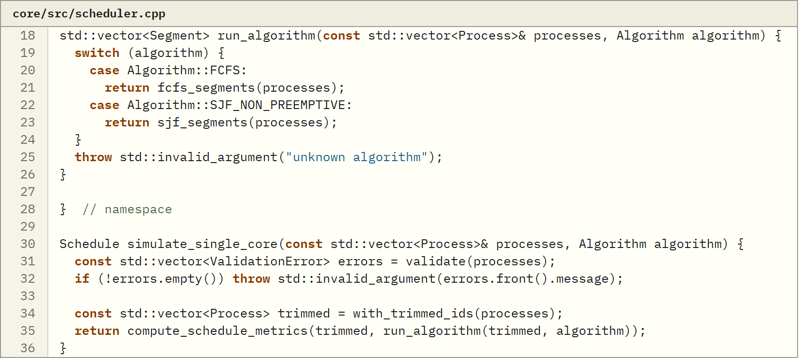
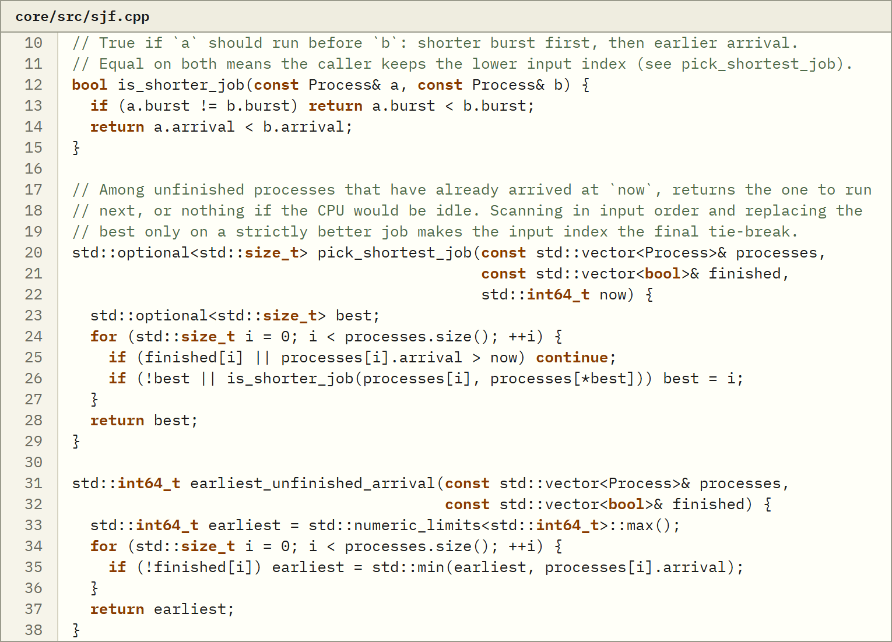
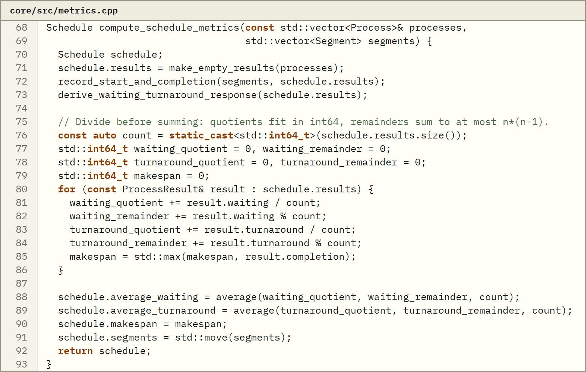
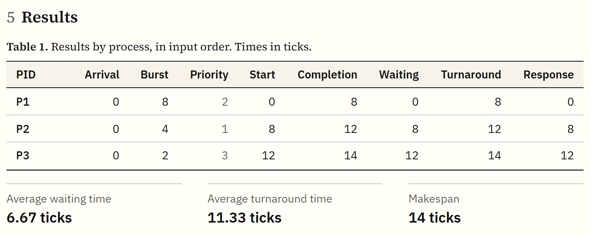
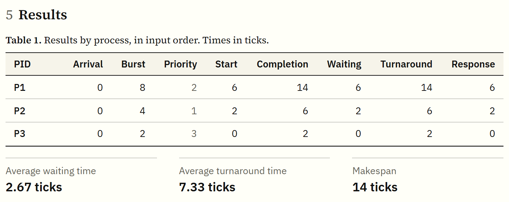
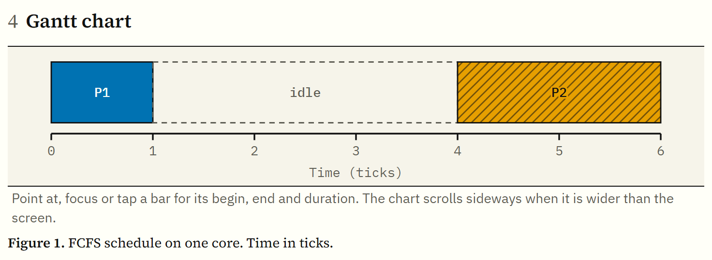
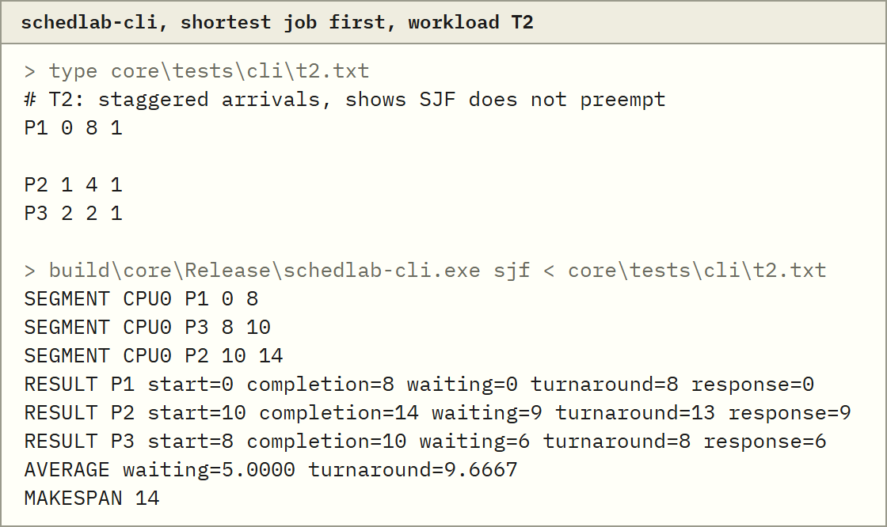

Operating Systems, Final Project
SchedLab is a CPU scheduling simulator. You type in a list of processes, pick an algorithm, press Run, and it shows you who gets the CPU and when. It supports the two algorithms the project asks for: first-come, first-served (FCFS) and shortest job first (SJF), both non-preemptive and both on a single CPU core.
For each process you give a process ID, an arrival time, a burst time and a priority. The program then draws a Gantt chart and fills in a table with the start, completion, waiting, turnaround and response time of every process, plus the average waiting time, the average turnaround time and the makespan. Time is counted in whole "ticks". A tick is just one step of the simulation, not a real millisecond.
We wrote the scheduling logic only once, in C++20, inside the core/ folder. That same code is then used in two places. Compiled normally, it becomes a console program called schedlab-cli and a set of unit tests. Compiled with Emscripten, it becomes a WebAssembly module that runs inside the browser. The web page is made with React, and its only job is to collect the input and draw whatever the C++ code returns. The page does not do any scheduling by itself. It talks to the core through a small TypeScript interface called SchedulerAdapter.
web/src)schedlab.mjs, built from wasm_bindings.cppcore/src)We did this so there is only one implementation to get right. To be sure the browser version and the console version really agree, we have a test for it (web/tests/parity.test.ts). It feeds the same inputs to both and fails if their outputs differ by even one character.
Every run passes through one function, shown in . It checks the input, cleans up the IDs, and asks the chosen algorithm for one thing only: when each process runs. The algorithm answers with a list of segments such as "P1 from 0 to 8". All the numbers in the results table are then worked out from those segments in metrics.cpp. This means FCFS and SJF share the exact same formulas, so they cannot disagree on how waiting time is computed.

core/src/scheduler.cpp, lines 18 to 36: run_algorithm picks FCFS or SJF, simulate_single_core validates, trims and computes metrics.You need Node.js with npm, CMake 3.20 or newer, and a C++20 compiler. Run these in PowerShell from the project folder.
cmake -S core -B build/core cmake --build build/core --config Release Set-Location web npm ci npm run dev # open the local URL that Vite prints # production build served locally npm run build npm run preview -- --host 127.0.0.1 --port 4173 --strictPort # console program (after the cmake build above) build\core\Release\schedlab-cli.exe <fcfs|sjf> < input.txt
Once the dependencies are installed, the app does not need the internet. The fonts, the example workloads and the WebAssembly module are all served from your own machine.
| Field | Meaning | What the editor accepts |
|---|---|---|
| PID | Process name shown on the chart | Not empty, unique (case-sensitive), and not the word IDLE |
| Arrival | Tick when the process is ready | Whole number, 0 to 1,000,000 |
| Burst | Ticks of CPU time needed | Whole number, 1 to 1,000,000 |
| Priority | Saved and shown in the results | Whole number, -1000 to 1000 |
About priority: the project brief lists it as an input, so we accept it and show it. But FCFS and SJF do not look at priority when choosing a process, so it has no effect on the schedule. The page says this next to the table, and we have a test (priority_does_not_change_the_order) that proves changing priorities changes nothing.
A schedule can have 1 to 100 processes. Bad input such as an empty field, a negative number or a decimal like 2.5 is rejected with a message that points to the exact field. We never quietly turn a bad value into 0, because that would give a wrong chart that looks correct.
The checking happens twice. The editor catches the simple things first (is it a whole number, is it in range). Then the C++ core checks everything again, including rules that need the whole table, like duplicate IDs and whether the total time still fits in a 64-bit integer. The core reports all the errors it finds, not just the first one, so you can fix everything in one pass.


core/src/validate.cpp, lines 95 to 109: validate collects every error before returning.The idea. FCFS is a queue, like lining up at a counter. Whoever arrives first is served first, and each process runs until it is finished. If two processes arrive at the same tick, the one listed first in the table goes first. If the CPU is free but the next process has not arrived yet, the CPU just waits (idle).
How our code does it. There are two small functions. indices_by_arrival () sorts the processes by arrival time using std::stable_sort. We picked a stable sort on purpose: it keeps the original order for processes with the same arrival, which is exactly the tie-break rule, so we get it for free. Then fcfs_segments () goes through that sorted list with a clock variable called now. For each process, if it has not arrived yet (process.arrival > now), we record an idle segment and jump the clock forward. Then we record the process's run and add its burst to the clock.

core/src/fcfs.cpp, lines 9 to 18: indices_by_arrival orders by arrival and keeps input order for ties.
core/src/fcfs.cpp, lines 22 to 42: fcfs_segments, the FCFS algorithm.Tracing it by hand with T1. Our first test case, T1, has three processes that all arrive at tick 0: P1 (burst 8), P2 (burst 4) and P3 (burst 2). Since the arrivals are equal, the order stays P1, P2, P3.
| Pass | now before | Next in order | arrival > now? | Segment recorded | now after |
|---|---|---|---|---|---|
| 1 | 0 | P1 (arrival 0, burst 8) | no | P1 [0, 8) | 8 |
| 2 | 8 | P2 (arrival 0, burst 4) | no | P2 [8, 12) | 12 |
| 3 | 12 | P3 (arrival 0, burst 2) | no | P3 [12, 14) | 14 |
A note on the notation: [8, 12) means the process runs during ticks 8, 9, 10 and 11, and is finished at tick 12. From the segments, P1 waits 0, P2 waits 8 and P3 waits 12, so the average waiting time is 20 / 3 = 6.67 ticks. The turnaround times are 8, 12 and 14, which average to 34 / 3 = 11.33 ticks. You can see the app showing the same numbers in .
What about idle time? Take P1 (arrival 0, burst 1) and P2 (arrival 4, burst 2). After P1 finishes, the clock is at 1, but P2 only arrives at 4. Since 4 > 1, the code records an idle segment [1, 4) and moves the clock to 4. P2 then runs [4, 6) and waits 0. The result is in .
The idea. Every time the CPU becomes free, SJF looks at the processes that have already arrived and picks the one with the shortest burst. If two have the same burst, the one that arrived earlier wins, and if that is also a tie, the one listed first wins. The chosen process runs until it finishes. Because our version is non-preemptive, a shorter process that arrives in the middle cannot cut in. It has to wait for the current one to finish.
How our code does it. Unlike FCFS, SJF cannot be solved with one sort at the start, because which processes are "available" depends on the current time. So sjf_segments () uses a loop that repeats once per process. In each round it calls pick_shortest_job to get the best process that has arrived by now. If nothing has arrived, it jumps the clock to the next arrival (earliest_unfinished_arrival) and records an idle segment. Then it records the run, moves the clock forward and marks the process as finished.
The comparison lives in is_shorter_job, which checks burst first and then arrival. The last tie-break (input order) is a small trick: pick_shortest_job scans the table from top to bottom and only swaps its choice when it finds a process that is strictly better, so on a full tie the earlier row stays (). Scanning the whole table for every pick makes this O(n2). A priority queue would be faster, but with at most 100 processes the simple version is more than fast enough and easier to read.

core/src/sjf.cpp, lines 10 to 38: is_shorter_job, pick_shortest_job and earliest_unfinished_arrival.
core/src/sjf.cpp, lines 42 to 69: sjf_segments, the SJF algorithm.Tracing it by hand with T2. Our second test case is made to show non-preemption. T2 is P1 (arrival 0, burst 8), P2 (arrival 1, burst 4) and P3 (arrival 2, burst 2).
| Pass | now | Arrived and unfinished | Chosen | Segment recorded | now after |
|---|---|---|---|---|---|
| 1 | 0 | P1 | P1 | P1 [0, 8) | 8 |
| 2 | 8 | P2 (burst 4), P3 (burst 2) | P3, the shorter | P3 [8, 10) | 10 |
| 3 | 10 | P2 | P2 | P2 [10, 14) | 14 |
At tick 0 only P1 exists, so SJF has to pick it even though it is the longest job. P2 and P3 arrive at ticks 1 and 2 while P1 is still running. P3 only needs 2 ticks, but it cannot interrupt P1, so P1 keeps the CPU until tick 8. Only then does SJF compare P2 and P3 and pick the shorter one, P3. The waiting times are 0 (P1), 9 (P2) and 6 (P3), so the average waiting time is 15 / 3 = 5.00 ticks and the average turnaround is 29 / 3 = 9.67 ticks. The app output is in . FCFS on the same input gives 5.67 and 10.33 ().
All the numbers in the results table come from the segments, using the standard formulas:
For n processes, average waiting = (sum of waiting) / n, average turnaround = (sum of turnaround) / n, and makespan = the largest completion time. In the code, record_start_and_completion copies each segment's begin and end into its process, and derive_waiting_turnaround_response applies the three formulas (). compute_schedule_metrics then adds them up and returns the averages and the makespan ().
One technical detail: we do not just add everything into a double and divide. With very large times, the sum could overflow or lose precision. So the code adds up the integer quotient and remainder of each value divided by n, and converts to a decimal only once at the end. For normal small inputs like our test cases the answer is the same as plain division. The app shows two decimal places and schedlab-cli shows four.

core/src/metrics.cpp, lines 23 to 47: record_start_and_completion and derive_waiting_turnaround_response (the three formulas).
core/src/metrics.cpp, lines 68 to 93: compute_schedule_metrics returns results, averages and makespan.Sample computation: T2 under SJF. From the trace above, the schedule is P1 [0, 8), P3 [8, 10), P2 [10, 14).
Average waiting = 15 / 3 = 5.00 ticks. Average turnaround = 29 / 3 = 9.67 ticks (the console prints 9.6667). Makespan = 14 ticks, which is when P2 finishes.
These are screenshots of the actual running app. Each figure shows the Gantt chart first, then the results table with the averages. The small "Figure 1" and "Table 1" labels inside the screenshots are the app's own labels, not this report's numbering. When the input is not obvious from the chart, we show the input table first. at the end puts all the averages side by side.









The same core also runs as a plain console program. schedlab-cli reads one process per line in the form id arrival burst priority and prints the segments, the per-process results, the averages (four decimals) and the makespan. shows the real output for T2 under SJF. The numbers are the same as in , which is what we expect since both use the same C++ code.

build\core\Release\schedlab-cli.exe with the input file shown above the output.| Workload | Algorithm | Run order | Average waiting | Average turnaround | Makespan |
|---|---|---|---|---|---|
| T1: P1 (0, 8), P2 (0, 4), P3 (0, 2) | FCFS | P1, P2, P3 | 6.67 | 11.33 | 14 |
| SJF | P3, P2, P1 | 2.67 | 7.33 | 14 | |
| T2: P1 (0, 8), P2 (1, 4), P3 (2, 2) | FCFS | P1, P2, P3 | 5.67 | 10.33 | 14 |
| SJF | P1, P3, P2 | 5.00 | 9.67 | 14 | |
| Idle case: P1 (0, 1), P2 (4, 2) | FCFS and SJF | P1, idle, P2 | 0.00 | 1.50 | 6 |
We did not want to rely on "it looks right on screen", so the project has automated tests at each level. The results below are from a run on 14 November 2026 on Windows 11.
| What is tested | Command | Result |
|---|---|---|
| C++ core (algorithms, metrics, validation) | ctest --test-dir build/core --output-on-failure -C Release | 15 of 15 passed |
| Windows tool (optional extra) | ctest --test-dir build/intel --output-on-failure -C Release | 9 of 9 passed |
| Web unit tests and the browser-vs-console comparison | npm test in web/ | 772 tests passed, 17 test files |
| TypeScript type check | npm run typecheck in web/ | no errors |
| Tests that click through the real app in a browser | npm run test:e2e in web/ | 22 passed (Chromium) |
What the tests check. The core tests compare the exact segments, per-process numbers and averages for T1 and T2 under both algorithms against values we computed by hand. They also cover the tricky cases: idle time at the start and in the middle, processes with identical values, a single process, input that is not sorted by arrival, every tie-break rule, and every validation rule. Some tests generate many random workloads and check things that must always be true, for example that no two segments overlap, that every process runs exactly once, and that waiting time is never negative. The browser tests run T1 and T2 on a phone-sized and a desktop-sized window, try bad input, and load the app with the network blocked to confirm it works offline.
What we did not test. We only tested on Chromium, not Firefox or Safari. We did not test on a real phone or with a screen reader. For the optional Windows tool, we only have measurements from one laptop.
These two extras are optional and for learning only. They are not part of the graded FCFS and SJF simulator, which stays the default mode. They do not change how FCFS or SJF work.
Modern laptop CPUs do not have identical cores anymore. Intel mixes fast P-cores with slower, power-saving E-cores, and Arm phones do something similar. We were curious how that would look on a Gantt chart, so we added a mode where you can switch from one core to an Intel-style layout (6 P-cores and 4 E-cores, ten lanes) or an Arm-style layout (1 Prime, 3 Big and 4 LITTLE cores, eight lanes).
In this mode, FCFS or SJF still decides which process goes next, and a second rule decides which free core it goes to. The burst is treated as an amount of work, and a process takes ceil(work / core speed) ticks, so the same job finishes sooner on a faster core. The results are clearly marked SIMULATED and Experimental / simplified model.
As an example, T1 under FCFS with the default placement finishes at tick 8 with an energy index of 14. If we place each process on the fastest free core instead (), all three run on P-cores, the makespan drops to 4 ticks and the energy index rises to 21. So the model shows the basic trade-off: faster cores finish earlier but cost more energy. The exact values only mean as much as the made-up rates do.

The simulation above uses invented numbers, so we also tried measuring the real thing. schedlab-intel.exe (in native/windows-intel) is a small separate C++ program for Windows. It asks Windows which kinds of cores the machine has, then runs a fixed piece of work on one thread while asking Windows to keep that thread on either the fastest or the most power-saving kind of core. This uses a Windows feature called CPU Sets. The tool saves its timings to a JSON file, and the web app can open that file and show it in a separate Native measured panel. These are real milliseconds, so the app never mixes them into the tick-based Gantt chart.
We ran it on 14 November 2026 on a 12th Gen Intel Core i7-12650H laptop on the Balanced power plan. Each test did one warm-up run and then three timed runs of 400,000,000 loop iterations. Every run produced the same checksum (51001733377), which confirms each run did the same work.
| Requested core type | Run 1 | Run 2 | Run 3 | Median | Min to max | Times the thread was seen on the requested type (per run, of 382 checks) |
|---|---|---|---|---|---|---|
| performance | 678.4595 | 668.6926 | 689.6459 | 678.4595 | 668.6926 to 689.6459 | 382, 382, 382 |
| efficient | 838.2289 | 795.0416 | 828.3228 | 828.3228 | 795.0416 to 838.2289 | 365, 310, 365 |

Rounded to two decimals, the medians are 678.46 ms when we asked for performance cores and 828.32 ms when we asked for efficient cores.
How much can we trust this? The performance request behaved well: the thread was on a P-core in all 382 checks of every run. The efficient request did not fully hold. The thread was on an E-core in only 365, 310 and 365 of 382 checks, so part of that time was actually spent on other cores. Because of that, we cannot honestly say "E-cores are X% slower than P-cores" from these numbers, and we do not claim it. Other limits:
1. Among the scheduling algorithms you implemented (FCFS, SJF), which one performed the best in terms of average waiting time and turnaround time? Explain why.
SJF did better on both, in both of our test cases. In T1 every process arrives at tick 0, so the only thing that changes is the order. FCFS runs P1, P2, P3 and gets an average waiting time of 6.67 ticks and an average turnaround of 11.33. SJF runs P3, P2, P1 and gets 2.67 and 7.33.
The reason is easy to see once you count who waits for whom. Whatever runs first is waited on by everyone behind it. FCFS puts the 8-tick P1 in front, so P2 and P3 both sit through it and wait 8 and 12 ticks. SJF puts P1 last, so nobody waits for it. The total work does not change, since both finish at tick 14.
In T2 the gap is smaller: 5.67 against 5.00 for waiting and 10.33 against 9.67 for turnaround. P1 was alone at tick 0 and cannot be interrupted once it starts. SJF is also not better for every process, because P2 waits 9 ticks under SJF but only 7 under FCFS. Our simulator also knows every burst ahead of time, while a real OS has to guess.
2. How does the arrival time of processes affect the fairness and efficiency of each scheduling algorithm? Provide an example based on your test cases.
Arrival time decides who is actually in the ready queue when the CPU becomes free, so it affects both algorithms. FCFS only looks at arrival. That feels fair because nobody gets overtaken, but a short job that comes late still waits behind long ones. In T2, P3 arrives at tick 2 needing only 2 ticks, and it waits 10 ticks, the longest wait in that run.
SJF depends on arrival even more. At tick 0 only P1 was there, so SJF had no real choice, and since it is non-preemptive P1 held the CPU until tick 8. Only then could it pick P3 over P2. P3's wait dropped from 10 to 6, but P2's went up from 7 to 9. SJF's lead in average waiting time shrank from 4.00 ticks in T1 to 0.67 in T2, just because the arrivals were spread out.
Arrival also decides if the CPU sits idle. With P1 (0, 1) and P2 (4, 2), the CPU is idle during [1, 4) under both algorithms. Both give an average waiting of 0.00 and a turnaround of 1.50. When there is only one process to choose from, the algorithm does not matter.
3. Which algorithm was the most challenging to implement and why? What concept or logic made it difficult?
SJF was harder than FCFS. FCFS is basically one stable sort by arrival and then a single loop with a clock. SJF cannot be done with one sort, because the list of processes you can choose from changes as time moves. The code has to pick one, run it, move the clock, then pick again, and a few details have to be right at the same time.
The first is idle time. If nothing has arrived yet, the clock has to jump to the next arrival and an idle segment has to be recorded, or else the loop has nothing to pick. The second is tie-breaking: same burst goes to the earlier arrival, then to the one listed first. We handle the last rule by scanning in input order and only replacing the choice when another process is strictly better. The third is non-preemption. The scheduler must not choose again when a shorter process arrives in the middle of a run, and T2 is there to check that.
Outside the algorithms, the hardest part was making the browser version and the console version give identical results. JavaScript stores numbers as doubles, so we had to limit the integer range and compute the averages carefully.
4. If you were to improve your simulator, what additional features or enhancements would you add to make it more useful or realistic for OS learning?
First, we would add the algorithms that the project did not require: shortest remaining time first (the preemptive version of SJF), round robin with a time quantum you can set, and priority scheduling, which would finally use the priority field that we currently store but ignore. T2 shows why this matters. SJF cannot let P3 run at tick 2, but a preemptive version could. Seeing both on one chart would show what preemption gains and what it costs.
Second, a step-by-step playback and a side-by-side comparison view. Right now you have to switch algorithms and compare two screens yourself. Watching the queue change one tick at a time would make things like the convoy effect much easier to see.
Third, we would make it more realistic. Real processes alternate between CPU bursts and I/O, and switching between processes takes time, so adding I/O bursts and a context-switch cost would change which algorithm wins. A random workload generator, CSV export, and extra numbers such as CPU utilization and throughput would also help with bigger experiments.
5. How does simulating CPU scheduling help you understand real-world operating system behavior? Give at least two insights you gained from this project.
The first insight is the convoy effect. In T1 under FCFS, P3 only needs 2 ticks but waits 12 because it is stuck behind the 8-tick P1 and the 4-tick P2. Just by changing the order, SJF cut the average waiting time from 6.67 to 2.67 ticks, while the total work and the makespan of 14 ticks stayed the same. So a scheduler does not make the computer faster. It changes how long each user waits.
The second insight is that every algorithm has a catch. SJF gives the best averages, but it needs to know the burst time before the process runs, which a real OS does not know. T2 also shows that without preemption a short job can still get stuck behind a long one.
The third insight came from the Windows experiment. Textbook examples assume all cores are the same. On a real Intel laptop there are different kinds of cores, and even when we asked Windows to keep a thread on the efficient cores, it was there for only 365, 310 and 365 of 382 checks. Real scheduling also depends on core types, power settings and other running programs, which our simulator leaves out.
plan.md, docs/core-contract.md, docs/web-contract.md, docs/hybrid-contract.md and docs/hardware-assumptions.md.